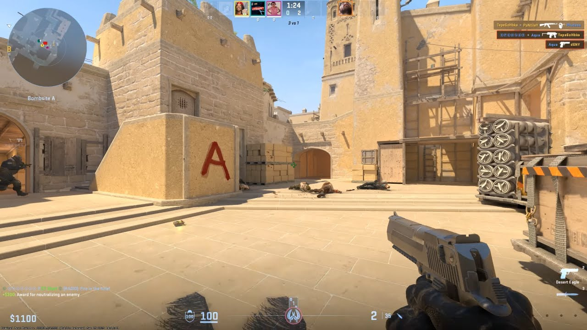

Bienvenue sur le site concernant le jeu Counter Strike 2
-
⸱ Le menu des cartes
Voici le menu des cartes. Ce menu contient la plupart des cartes jouables sur le jeu. Vous choisissez sur quelle(s) carte(s) vous souhaitez aller, et le jeu vous y emmène
-
⸱ Les graphismes
CS2 est le descendant de Counter Strike : Global Offensive. Le jeu a été refait pour notamment améliorer les graphismes
-
⸱ Un système de cosmétiques
Le jeu a une énorme quantité de cosmétiques qui ont pour but de faire en sorte que le jeu soit rentable, mais aussi que les joueurs puissent avoir des armes personnalisées en fonction de leur goût